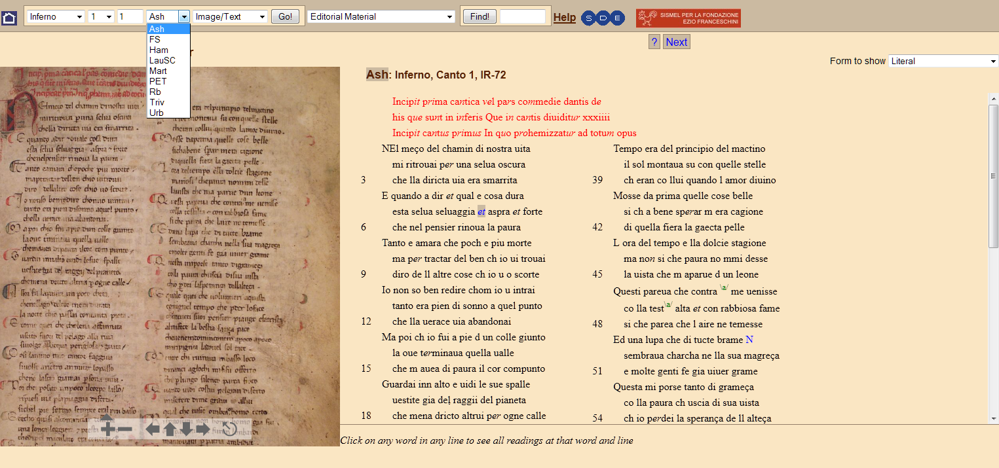
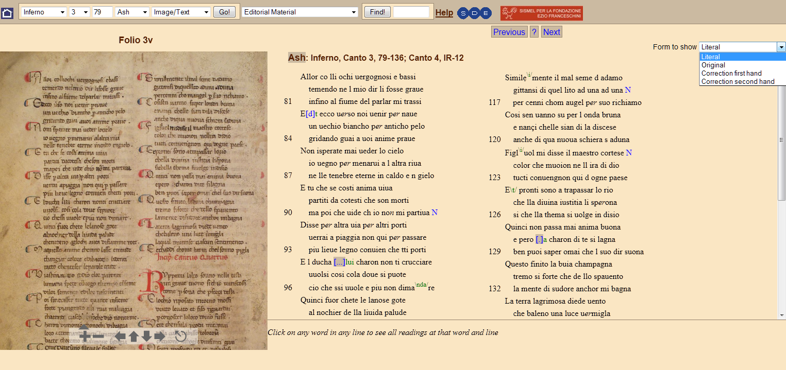
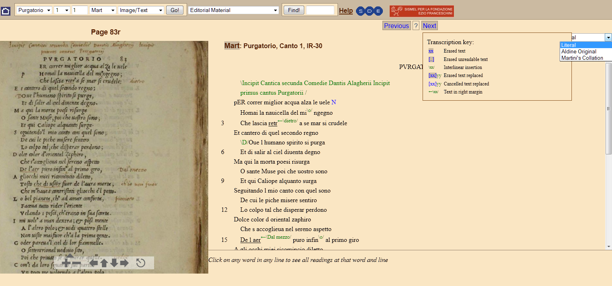
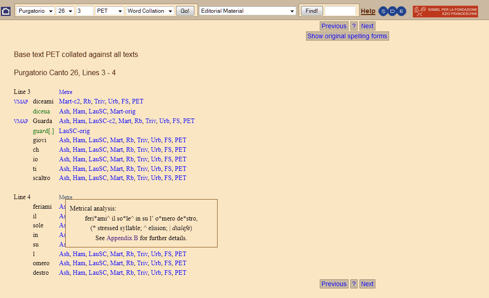
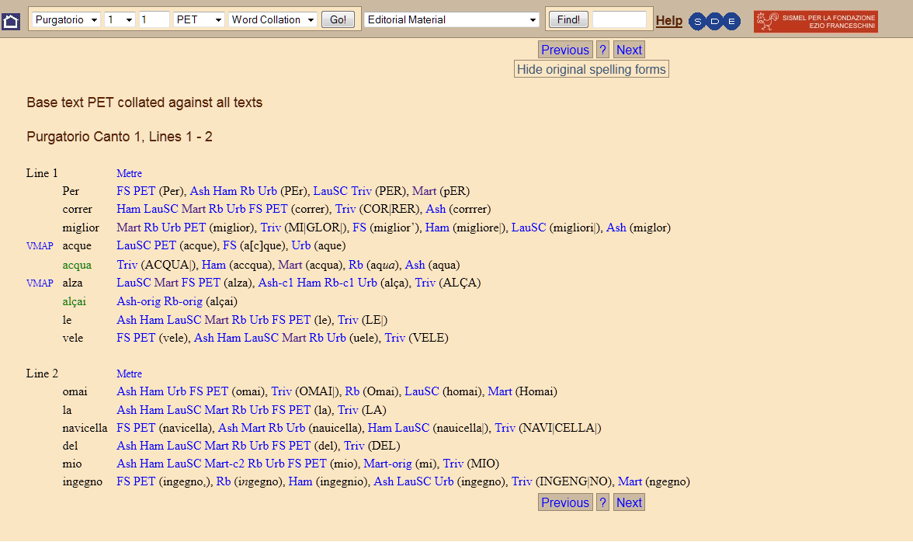
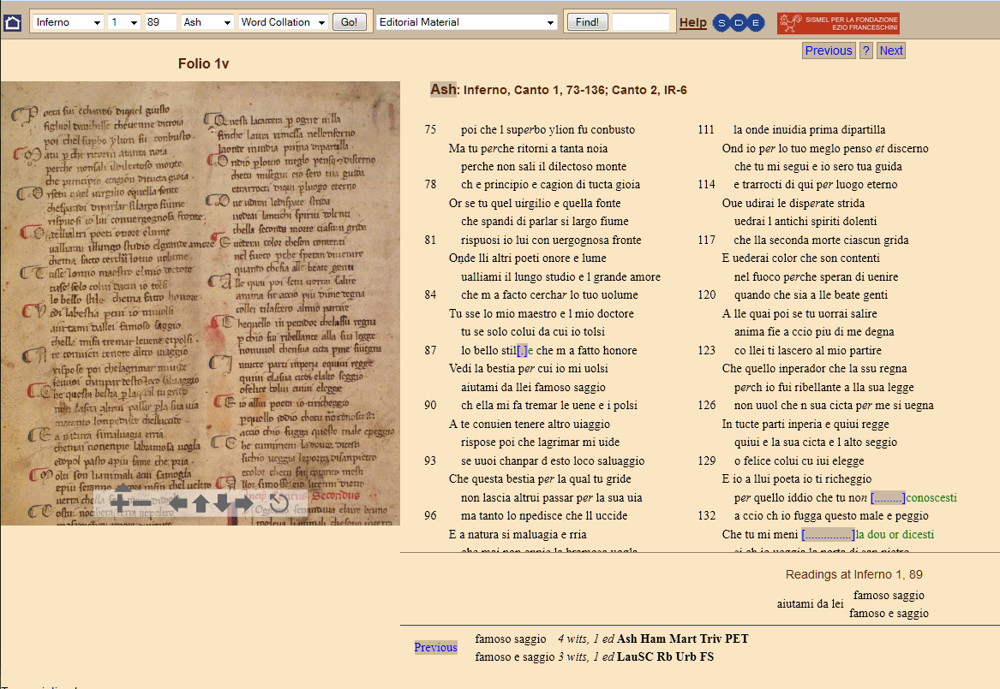
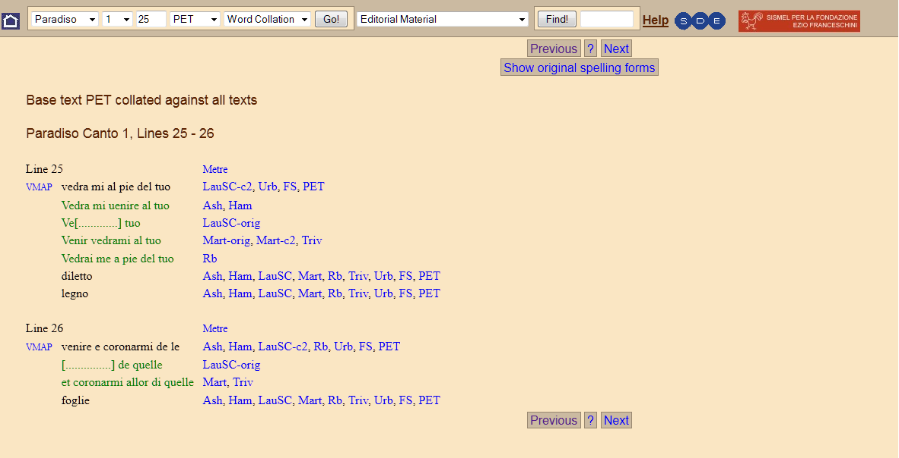
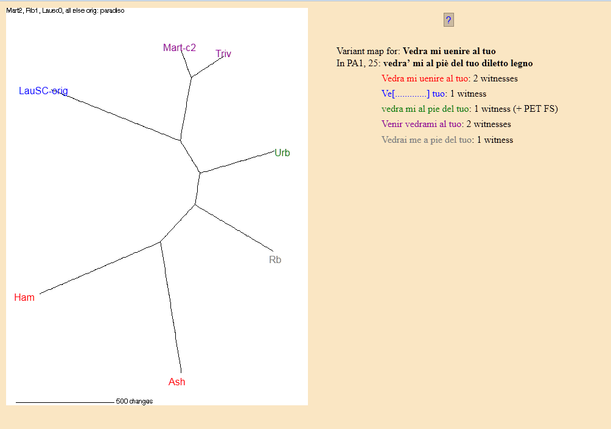
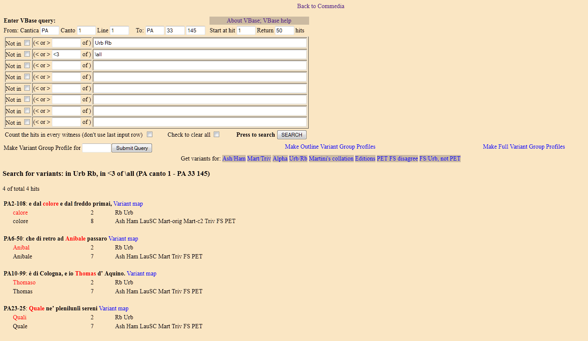

Processing Dante’s Commedia: From Sanguineti’s Edition to Digital Tools
Table of Contents
Abstract
The Commedia project aims to investigate the manuscript transmission of the poem, using Sanguineti's previous edition and checking the validity of his stemma with computer methods. Full transcriptions of the seven selected witnesses are provided alongside the corresponding facsimiles. The end results of the collation and phylogenetic analysis differ from Sanguineti's edition and reshape the stemma. No new critical text is provided. The edition is easy to navigate and high quality editorial materials are available. A metrical markup enriches the text and the integrated VBase tool allows the user to retrieve variants in different witnesses and parts of the poem.
Editing the Commedia: a short history
2010 saw the publication of a digital edition of the Commedia overseen by Prue Shaw. Written in the first quarter of the 14th century, Dante’s masterpiece traces the poet’s journey through the topographies of the afterlife. The poem is divided into three cantiche (Inferno, Purgatorio, Paradiso), each composed of 33 cantos, themselves written in hendecasyllabic tercets.
The Commedia has a long and controversial editorial history. This is hardly surprising given the work’s resonance throughout centuries and thus the number of witnesses of the poem, over 600 including complete manuscripts and early printed editions. Scholars have deployed a range of editorial strategies in an attempt to settle on a critical text of the Commedia. In this section, I will summarise these strategies in brief, focusing on those elements of each that remain relevant to the edition under review.
The length of the text and the number of witnesses has made it difficult to compare versions of the text in their entirety. At the end of the 19th century, Michele Barbi sought something of a compromise: he selected a series of lines – the so-called 400 loci (Bartoli, D'Ancona, and Del Lungo 1891; Barbi 1891) – drawn from various points in the Commedia. Scholars were invited to check these lines in those manuscripts of the poem to which they each had access and to send a record of them to the Società Dantesca Italiana. Unfortunately, only a handful of these scholars replied and Barbi’s initiative turned over very little material.
Following the Vandelli (Vandelli 1921) and Casella (Casella 1923) editions, Giuseppe Petrocchi drafted a new Edizione Nazionale in 1965 on the occasion of the seventh centenary of Dante's birth (Petrocchi 1965). Petrocchi chose to limit his project to manuscripts that dated before 1355; the project’s theoretical underpinning was that witnesses drafted after that date were likely contaminated, largely because of the scribal and editorial endeavours of Giovanni Boccaccio, who copied out the entire Commedia at least three times, introducing variants from other copies. Petrocchi's critical text is an attempt to reconstruct the so-called antica vulgata in use during the three decades following Dante's death rather than an archetype; this last concept is hardly applicable to a text which was almost certainly released in sections.
Antonio Lanza's 1995 edition had a different aim: following Bedier's prescripts, the editor reproduced a bon manuscrit – copied in Florence in 1337 –, referring to early Florentine manuscripts in order to make amendments only where strictly necessary (Lanza 1995).
In 2001, Federico Sanguineti published a new edition using a small pool of witnesses: seven manuscripts known as ‘the Sanguineti seven’. His stemma consists of two branches: α and β; to simplify, manuscripts from Tuscany form the α branch, while those from Northern Italy form the β branch. As a general rule in textual and linguistic transmission, the peripheral geographical areas tend to be more conservative than the centre; Florence had early on become an active centre for reproductions of the Commedia, while northern manuscripts tended to be less innovative. Sanguineti decided to use the only second branch witness – ms. Urbinate Latino 366 of the Vatican Library (Urb), written in Emilia Romagna – as the base-text for his critical edition. It is worth clarifying that ms. Urbinate’s solitary position in the β branch is due to the limited overall number of witnesses Sanguineti chose to mobilise and to his choice to move ms. Rb (now disjointed in two voumes: Inferno, Purgatorio at the Biblioteca Riccardiana, while Paradiso at Biblioteca Nazionale Braidense) from the β to the α branch. Critics drawn to Sanguineti's edition have repeatedly expressed their concern regarding the scarcity of readings offered as a proof of validity of his stemmatic hypothesis and their distribution along small sections of the poem (e.g., Segre 2002).
This last step in the editorial history of the Commedia is particularly relevant to the edition under review. Sanguineti was originally part of the Commedia project, whose goal was, in part, to test the validity of his stemma. At the time of the project’s inception, the scholars involved anticipated a positive result for Sanguineti. In Shaw's words, 'it seems important to emphasize that the conclusions we reached are not those we expected to reach when we started out on the digital Commedia project [...]. The result turned out to be more interesting and complex'.
Introduction: Shaw's edition
The Commedia Project officially ran from 1998 to 2010, with funding from The British Academy, The Arts and Humanities Research Council, The Modern Humanities Research Association and the Rockefeller Foundation. The venture’s main actors were Prue Shaw (editor), Jennifer Marshall (research assistant) and Peter Robinson (responsible for the information technology side of the project). As mentioned in the foreword to the edition, the genesis of the project dates back to the early 1990s; the original idea spread between Europe and Australia, and the project was finally structured between 1998 and 2001, when Federico Sanguineti's edition appeared. In 2010, Shaw’s Digital Edition was released online and on DVD. The present review deals only with the online edition – however, there is no difference in content between the two versions.
Shaw's digital edition has much to recommend it: it provides critics with access to seven of the most important witnesses of the poem in both extremely accurate transcription and high-definition images; it questions the soundness of Sanguineti’s stemma by putting it to the test of phylogenetic analysis and de-stabilizes assumptions surrounding the validity of the position of ms. Rb – the basis of Sanguineti's critical text; it provides word collation and tools for investigating variants distribution across the witnesses. Finally, it presents high quality editorial materials on textual and technological aspects.
The decision to limit the scope of the project to the Sanguineti seven manuscripts alone has invited some criticism (Inglese 2012). However, the editors were interested in Sanguineti's hypothesis from the offset precisely because ‘such a small number of manuscripts would make a computer project a feasible possibility’ (see below). The selection reflects a paradox well known to textual scholars dealing with large manuscript transmission and with long texts: though computers do indeed allow human beings to process great quantities of data quickly, preparing materials to be computer-readable might be time consuming to the degree of nullifying the advantages gleaned from the former. Every project must of necessity reach a compromise with its ambition (for a different strategy in applying digital technologies to the edition of the Commedia, see Renello 2013).
Witnesses description, transcription and encoding
High quality images are available for all manuscript leaves, except for the ms. Urb, due to copyright restrictions.
The witnesses’ description is very accurate, examining codicological, palaeographical and linguistic features, enriched by images illustrating the discussed phenomena. Ms. Transcription notes on individual witnesses provide further information specific to each of them.



The witnesses are fully transcribed and encoded. It is worth mentioning another major web resource for scholars interested in reading Dante in manuscripts: the Dante online portal of the Società Dantesca Italiana. The only manuscript fully transcribed in both projects is the Trivulziano (Milan, Biblioteca dell'Archivio storico civico e Trivulziana, Ms. Trivulziano 1080).1
Barbara Bordalejo has authored the introductory chapter on the encoding system. The edition provides numerous examples of the encoding of scribal deletion, problematic readings, glosses and alternative readings, substitution of one reading for another, aspects of layout, etc. The texts have been encoded in Collate-style markup (specific to the collation tool Collate, see below), and later transformed into a customized version of XML-TEI. Starting from the transcription guidelines elaborated by the Società Dantesca Italiana for the Dante Online website, the project created a model with which to separate 'the text of the document' and 'the variant states of the text'. Bordalejo observes that
the main goal of this new transcription system is to present a clear distinction between the text of the document (i.e. what goes in the lit tag: the exact series of marks upon the page) and how the editor (or the transcriber) interprets the different stages of development of the text (i.e. our understanding of the text as originally written and then altered).
Here is an example: <rdg>) mark the
variant states of the text: the original and the corrected. The third
<rdg> registers the text of the document. TEI elements have not
here been used as suggested by the TEI Guidelines and little use is made of the TEI
Representation of Primary Sources module.

Collation and phylogenetic analysis



The collation generates a single XML-encoded file containing the collation result for the entire Commedia. Data is then stored in standard NEXUS file format for processing with PAUP (Phylogenetic Analysis Using Parsimony). The program uses the record of agreements and disagreements among the witnesses ('taxa', in evolutionary biology) at precise sites of variation ('characters'), to generate a phylogram: an unrooted tree. The length of the branches corresponds to the degree of divergence between witnesses. PAUP, which has proven to be particularly suited to the purposes of textual critics, uses sophisticated methods to find the most 'parsimonious' evolutionary tree: considering all possible bifurcating trees, it identifies the one that requires the smallest number of changes (Windram et al. 2008; Roos, Teemu, and Heikkila 2009; Young 2014). It is worth remembering that evolutionary trees are unrooted, i.e. they have no orientation. For the purposes of textual criticism, this means that the computer fails to provide answers at the highest levels of the stemma.

The data is processed multiple times: once for the entire poem, again for each cantica and yet again for sections within each cantica. The phylogenetic analysis shows that there is no divergence in 88% of the Commedia text. It also produces trees for Inferno and Purgatorio that are 'indistinguishable from those for the whole text, while the tree for Paradiso shows a slight variation' (Introduction). On the basis of their experience with the materials and the analytical method, the editors state:
however, one could not assert that part-publication [...] of these cantiche of the Commedia [...] did not happen at all. Simply, the phylogenetic analysis suggests no evidence for it.
A comprehensive account of the conclusions drawn from phylogenetic analyses is beyond the scope of this review; following an exhaustive account of the editorial history and textual problems of the poem, philological results are presented on the Introduction page (and particularly in the Manuscripts and computers chapter and the following chapters) and on the Phylogenetic analysis page. In Shaw's words, the project’s most significant finding is
the clarification of the position of Rb: Rb is shown unequivocally to be a collaterale of Urb, and not a member of α as Sanguineti maintains. This inevitably has important knock-on effects for the restitutio textus.
In his review, Giorgio Inglese adds nuance to this conclusion, suggesting that 'the appearance of a peculiar relation [between the manuscripts Urb and Rb] is just a consequence of the selection of the witnesses' (Inglese 2012). A reading which seems specific to those two manuscripts can in fact appear in others which are not taken into account in the edition. Inglese highlights the value of the electronic collation that allows for an in-depth evaluation analysis by providing readers with the chance to check the editor's conclusions. He follows to observe that, as far as it regards the restitutio textus, Shaw’s hypothesis (Rb has a β text) leads to the same results than his own (Rb has an α text, contaminated with β): Rb and Urb agreement represents β.
Judging variants. Editors vs machines?
A frequent question in Digital Humanities is whether digital technologies have altered methods of scholarship and, if so, how. For instance, how does one reckon with textual variants in the field of scholarly edition? The question inevitably arises wherever scholars seek to track the transmission of a work and to produce a critical text. In the so-called Lachmannian tradition, the editor is required to distinguish between variants and errors and to consider only the latter in drawing relations between witnesses. The trees produced in textual criticism using evolutionary biology methods, however, draw upon all the evidence – that is variants which may or may not include errors. For instance, in her analysis of the relationship between the ms. Urb and the ms. Rb, Shaw presents the following evidence: errors in common (counted as errors by Petrocchi but accepted by Sanguineti) and errors separativi of α (which isolates Urb and Rb), which amount to ten 'monogenetic variants linking Rb and Urb'. In addition, the editor considers small errors and variants according to the following useful taxonomy (for a similar list of types of polygenetic variants, see Brandoli 2007): substitution of a word, change in word order, addition or omission of the definite article, addition or omission of the first person pronoun io and/or the third person pronoun el, addition or omission of a small word, singular for plural or vice versa, variants with an extra or missing syllable which affects scansion, resulting in a metrical error or not, different forms of the verb, retouching of short phrases. As Shaw points out,
some of these categories are not especially significant in themselves. Singly, they mean next to nothing. But it is the presence of a long series of them uniformly right across the text in a very small number of manuscripts which is striking (and this is surely what Petrocchi’s phrase ‘foltezza di statistica’ refers to at least in part) [...] If the results of the computer analysis are accepted as valid for mss. AHMT and L, there is no reason that they should not be accepted as valid for mss. R and U.
A coherent agreement or divergence between witnesses alongside the text, including errors and variants, is evidence that has to be taken into account. Shaw's assertions are less persuasive, however, where she argues that
this ability of phylogenetics to create hypotheses of relationships which do not require any prior judgments as to originality is one of its greatest strengths for textual scholars. In classical stemmatics, as formulated by Paul Maas, analysis must be based on shared error alone. Therefore, one must determine at each point which reading is “original", which is “error", before analysis can begin. As well as the difficulty of determining the “original" reading, there is the argument elegantly expressed by Talbot Donaldson: if one can determine the original reading at every point, then why bother with any further analysis?
However, determining which reading is an error in traditional stemmatics does not amount to identifying the original reading. For instance, an editor can establish that a reading that breaks the metrical scheme is an error and still have other witnesses with different, and potentially correct, readings; or a lectio difficilior might be 'trivialized' by all scribes, in the so-called ‘diffraction in absentia’, such that it remains extremely difficult to 'guess' which reading is the original and correct one. Thus what Shaw considers a matter of interpretation, avoidable by recourse to 'new methodology', in fact remains the domain of scholar's expertise.
Fortunately, Shaw seems to contradict her previous statement, declaring that 'assessing the significance of variants is a large part of the editorial process'. Doing it with digital technologies might be a promising field of investigation, which, to my knowledge, has only been pursued beyond the stage of theoretical assertions by few scholars (Barabucci, Di Iorio and Vitali 2014; Cadioli Forthcoming; a work in progress as part of the DiXiT Marie-Curie Network).
VBase integrated tool
The edition contains an integrated tool, VBase. The tool is used to retrieve variants according to their distribution across the witnesses. Though not immediately intuitive, the user is able to perform complex searches and have immediate results after only a short training (cf. Trovato 2014, 209). The importance of this tool is underlined by Trovato, who proved his skepticism on the value of the edition as a whole (Trovato 2010).
A query consists in asking for variants which only appear in one or more selected manuscripts. Furthermore, it is possible to specify whether those readings should not be present in other witnesses and to restrict the query to specific parts of the text. In each query, the number of results (readings) per single witness is available by checking the 'Count the hits in every witness' box. Eight variant groups – sets of variants characteristic of a particular group of witnesses, as a couple of manuscripts, a branch of the tradition, the editions, etc. – have been defined; variant groups can be deployed in order to perform searches within a single group or to have a witness react to a group.
The editors used VBase to visualize and analyse the collation results. In the section devoted to Phylogenetic Analysis, a number of VBase queries are discussed in detail; for example, according to VBase results, the agreements and disagreements of Rb with the variant groups show that the manuscript is a member of the β family, but shares many more readings with the α branch than Urb does (note that Shaw's conclusion, in contrast with Sanguineti's, is that Rb is a β witness; while Inglese considers Rb an α manuscript contaminated with β).

Publication and copyrights
The edition is powered by Anastasia, a publication tool that allows users to process and search large SGML/XML documents. The application was developed by Peter Robinson in 2000, as a successor to DynaText, and extensively renovated by him and Andrew West over the following years. In 2004 it was released open source. The advantages of Anastasia are that it bundles the server, parsing, searching, and display handling into a single package; it also assumes that any document is composed of a series of events which are defined not only by their hierarchical relation, but also by their left-to-right relation in the document stream. This last feature is significantly different from other XML systems. New developments by the same team have flowed into the SDPublisher publication system of the Scholarly Digital Editions (SDE) company. The system inherited the same basic model as Anastasia, with some major changes: it is not limited to Apache servers, it uses Python rather than TCL for scripting and uses a database to enable dynamic representations of texts. There are currently eleven editions available on the SDE portal – all of them powered by Anastasia/SDPublisher. Since 2010, no further developments have been planned for this tool. Peter Robinson, its main promoter, has moved on to different projects concerning the making and publishing of digital editions. On the publication side, his dedication to Chaucer's work has resulted in the CantApp, a digital edition of the Canterbury Tales for mobile devices. As far as regards the creation of digital editions, his new venture is the TextualCommunities portal; it aims to create free available editions, in collaboration with many people and in a web-based system that does not require extensive computer skills.
Presentation and usability
The edition is easy to navigate. The reader can select the portion of the text of interest (cantica, canto and verse), the witness and the kind of visualization: image/text, transcription or word collation.
All editorial materials are available from a drop-down menu. Moreover, an entire section is dedicated to 'Using this edition'; here the user can find help pages summarising the different functionalities and views, including information about printing facilities. A detailed table of contents always remains visible on the left side of the screen to orient the reader within the text. A simple search functionality is provided on the whole text and yields results as words in context.
Editorial materials include a list of abbreviations, a rich bibliography divided into sections and an appendix devoted to the list of Barbi's above mentioned 400 loci critici, with direct links to word collation for all of them.
However, a select few but nevertheless important facilities are missing: there are no citation guidelines and, on the technical side, it is not possible to download raw data, such as the XML files with transcriptions and related schemas.
A limited portion of the Shaw edition’s editorial materials are freely accessible on the web, as the collaborations and images that went into the project have left copyright owners concerned. All transcripts, collations and editorial materials are available under the Creative Commons 'Attribution-NonCommercial-ShareAlike 3.0' license.
Conclusion
Shaw makes several suggestions for the edition’s improvement. One of them concerns the Landiano manuscript (Piacenza, Biblioteca Comunale Passerini Landi, Landiano 190), which has not been included in the project, and the prospect of producing for it a transcription that includes the scriptura inferior, in the manner of the Ashburnam and Laurenziano manuscripts. Moreover, in light of the interesting results achieved on the basis of the manuscript Rb, a further controversial witness – the Madrid manuscript (Madrid, Biblioteca Nacional, ms. 10186) – would be worth analysing.
To conclude, the Commedia digital edition is not a precious resource for Dante scholars alone, but also, more broadly, for anyone interested in medieval manuscripts and in textual scholarship. It provides readers of Dante with an easy access to the manuscripts containing his work. The tools and the methodology applied are experimental and yield high quality results. The reader may or may not agree with the editor's conclusions, but the significant element of the project is that the reader is at liberty to verify those conclusions herself, by reading the explanation of any statement, comparing transcriptions with facsimiles, comparing every reading of any line and visualizing variant maps for them, testing the editor's hypothesis and formulating new ones using VBase. This is the essential scholarly value of Shaw's project.
It is unfortunate, then, that according to the WorldCat catalogue, fewer than thirty libraries in the world are in possession of the DVD or have complete online access. Moreover, libraries such as the British Library, the Bibliothèque nationale de France, or Cambridge University Library do not number among them. The libraries which provide access to Shaw’s edition are fourteen in Italy, seven in the USA, three in England, one in Spain, one in France and one in Germany. Shaw's edition certainly deserves a wider distribution.
Bibliography
- Anastasia: Analytical System Tools and SGML/XML Integration Applications. Scholarly Digital Editions, Leicester. Version 1.0, 2000; 2.0 2003. http://anastasia.sourceforge.net/.
- Barbi, Michele. 1891. ‘Canone di luoghi scelti per lo spoglio dei mss. della Divina Commedia’. Bullettino della Società Dantesca Italiana 5-6: 28-38.
- Barbi, Michele, Ernesto Giacomo Parodi, Flaminio Pellegrini, Ermenegildo Pistelli, Pio Rajna, E. Rostagno, Giuseppe Vandelli and Mario Casella, eds. 1921. Le Opere di Dante. Testo critico della Società Dantesca Italiana. Firenze: R. Bemporad e Figlio.
- Barabucci, Gioele, Angelo Di Iorio and Fabio Vitale. 2014. ‘Stemma codicum: analisi e generazione semi-automatica’. In Digital Humanities: progetti italiani ed esperienze di convergenza multidisciplinare. Atti del convegno annuale dell'Associazione per l’Informatica Umanistica e la Cultura Digitale (AIUCD) Firenze, 13-14 dicembre 2012, ed. Fabio Ciotti. 129-45. Roma: Sapienza Università Editrice.
- Bartoli, Adolfo, Alessandro D’Ancona and Isidoro Del Lungo. 1891. ‘Per l’edizione critica della Divina Commedia’. Bullettino della Società Dantesca Italiana 5-6: 25-7.
- Brandoli, Caterina. 2007. ‘Due canoni a confronto: i luoghi di Barbi e lo scrutinio di Petrocchi’. In Nuove prospettive sulla tradizione della Commedia. Una guida filologico linguistica al poema dantesco, ed. Paolo Trovato, 99-214. Firenze: Cesati.
- Cadioli, Luca. Forthcoming. ‘Grounded Theory, Atlas.ti and the Queste del Saint Graal: a feasibility test’. In Constiutio textus: establishing the crical text. Fourth Meeting in Digital Philology, Verona 13-15 september 2012. Berlin: De Gruyter.
- Casella, Mario, ed. 1923. La Divina Commedia. Bologna: Zanichelli.
- Collate. Computer Program. Version 1.0, Oxford 1991; 2.0 1994; revisions at Leicester 1996-2005, Birmingham 2005.
- CollateX http://web.archive.org/web/20150220112911/http://collatex.net.
- Inglese, Giorgio. 2012. ‘Rev. of Dante Alighieri. Commedia. A Digital Edition, ed. Prue Shaw.’ Giornale storico della letteratura italiana 189.627: 453-5.
- Petrocchi, Giorgio. ed. 1966-1967. Dante Alighieri. La commedia secondo l'antica vulgata. Milano: Mandadori.
- Renello, Gian Paolo. 2013. ‘Un programma per la classificazione 'computer assisted' delle copie della Commedia e di altre tradizioni sovrabbondanti’. In Nuove prospettive sulla tradizione della Commedia. Seconda serie (2008-2013), eds. Paolo Trovato and Elisabetta Tonello. Padova: Libreria Universitaria. 207-22.
- Robey, David. 2000. Sound and Structure in the ‘Divine Comedy’. Oxford: Oxford University Press.
- Robinson, Peter. 1989. ‘The Collation and Textual Criticism of Icelandic Manuscripts (1): Collation’. Literary and Linguistic Computing 4.2: 99–105.
- Roos, Teemu and Tuomas Heikkilä. 2009. ‘Evaluating methods for computer-assisted stemmatology using artificial benchmark data’. Literary and linguistic computing 24.4: 417-33.
- Sanguineti, Federico, ed. 2001. Dantis Alagherii Comedia. Firenze: Edizioni del Galluzzo.
- SDPublisher. http://web.archive.org/web/20150220165545/http://www.sd-editions.com/about/index.html.
- Segre, Cesare. 2002. ‘Postilla sull'edizione Sanguineti della Commedia di Dante’. Strumenti critici 2: 312-4.
- Trovato, Paolo. 2010. ‘La doppia Monarchia di Prue Shaw (con una postilla sulla Commedia)’. Ecdotica 7: 193-207.
- Trovato, Paolo. 2014. Everything you always wanted to know about Lachmann's method. Padova: Libreria Universitaria.
- Windram, Heather F., Prue Shaw, Peter Robinson, and Christopher J. Howe. 2008. ‘Dante's Monarchia as a test case for the use of phylogenetic methods in stemmatic analysis’. Literary and linguistic computing 23.4: 443-62.
- Young, Christopher. 2014. Readings in computational stemmatology. http://web.archive.org/web/20141014214101/http://chrisyoung.net/reading/computational-stemmatology.html.
Notes
- The double check may be useful, at least for spelling details: e.g., Inf, II, 2: DO toglieua vs SHAW togleua; and Shaw is more consistent in the preservation of the u/v instability. Nevertheless, considering the time needed to transcribe the whole poem, it is worth discussing whether it is worth having two projects independently carry out this task. ↑
@article{commedia,
author = {Spadini, Elena},
title = {Processing Dante’s Commedia: From Sanguineti’s Edition to Digital Tools},
journal = {RIDE – A review journal for digital editions and resources},
number = {3},
year = {2015},
doi = {10.18716/ride.a.3.2},
url = {https://doi.org/10.18716/ride.a.3.2},
}TY - JOUR
AU - Spadini, Elena
TI - Processing Dante’s Commedia: From Sanguineti’s Edition to Digital Tools
T2 - RIDE – A review journal for digital editions and resources
IS - 3
PY - 2015
DA - 2015/11
DO - 10.18716/ride.a.3.2
UR - https://doi.org/10.18716/ride.a.3.2
PB - Institut für Dokumentologie und Editorik e.V.
LA - en
ER - Spadini, E. (2015). Processing Dante’s Commedia: From Sanguineti’s Edition to Digital Tools. RIDE – A review journal for digital editions and resources, (3). https://doi.org/10.18716/ride.a.3.2Spadini, Elena. "Processing Dante’s Commedia: From Sanguineti’s Edition to Digital Tools." RIDE – A review journal for digital editions and resources, no. 3, 2015. https://doi.org/10.18716/ride.a.3.2.Spadini, Elena. "Processing Dante’s Commedia: From Sanguineti’s Edition to Digital Tools." RIDE – A review journal for digital editions and resources, no. 3 (2015). https://doi.org/10.18716/ride.a.3.2.